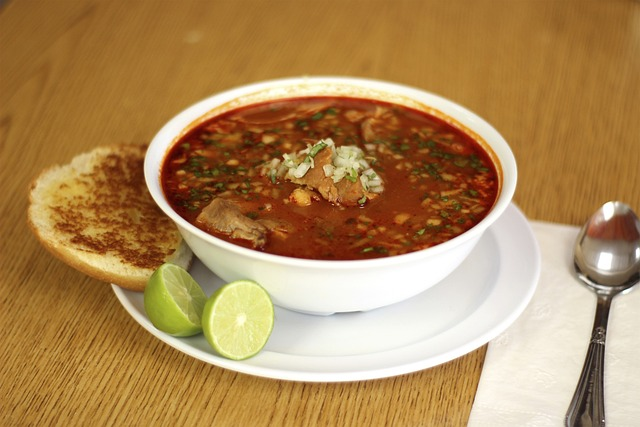
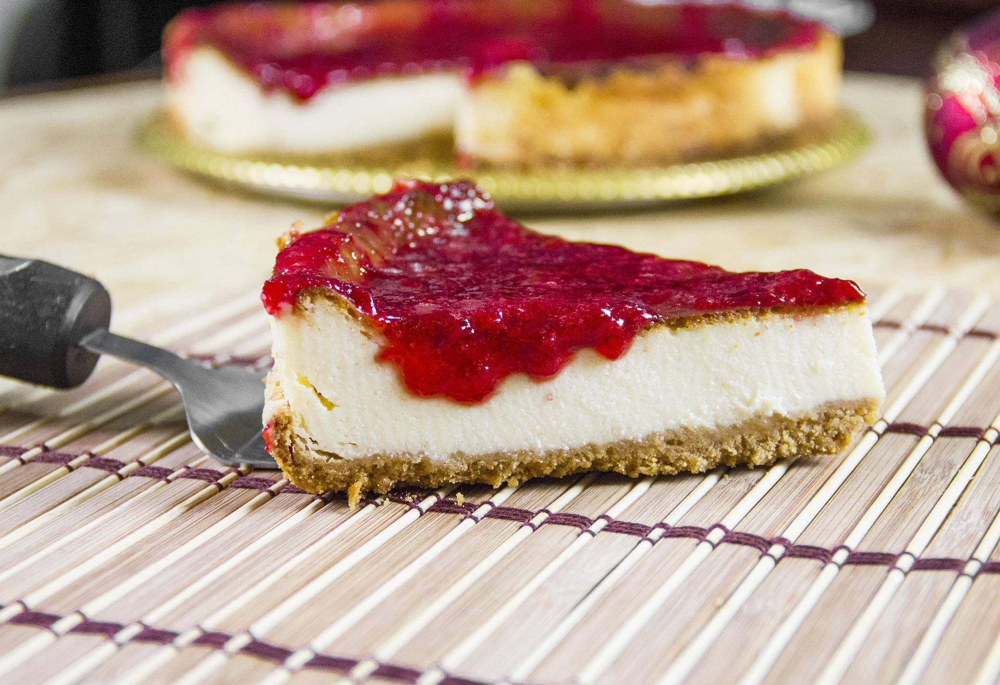

Anthony's personal top 5's
Top 5 foods at the moment (i was hungry)
This top 5 list is biased towards comfort food since I wrote it while hungry. Probably should make something from this list. Food is more than just fuel—it’s comfort, culture, and pure joy on a plate. This list highlights my current top 5 favorite foods, chosen not just for taste but for the memories and satisfaction they bring. Whether it's the bold, smoky flavor of tacos de asada or the creamy indulgence of cheesecake, each dish on this list earned its spot for a reason. Admittedly, I was pretty hungry while writing this, so comfort foods definitely won out. From savory Mexican classics like pozole to universally loved staples like pizza and waffles, these are the meals I crave the most right now. If you're looking for food that hits the spot every time, you're in the right place.
Number 1: Pozole
Pozole is a traditional Mexican soup or stew made with hominy (nixtamalized corn) and typically features pork or chicken as the main protein. It's simmered for hours with garlic, onions, and spices like oregano and cumin, creating a rich, flavorful broth. Pozole comes in three main varieties—rojo (red), verde (green), and blanco (white)—depending on the added chilies and herbs. It's commonly served with fresh toppings like shredded lettuce or cabbage, radishes, lime, oregano, and tostadas, making it both hearty and refreshing. Often enjoyed during celebrations and holidays, pozole is a beloved staple of Mexican cuisine.
Number 2: Tacos de asada

Tacos de asada are a classic and beloved Mexican street food made with grilled, marinated beef—usually skirt or flank steak—served on warm corn tortillas. The meat is typically seasoned with ingredients like lime juice, garlic, and spices before being seared to perfection for a smoky, savory flavor. They're often topped simply with chopped onions, fresh cilantro, salsa, and a squeeze of lime. Easy to eat and packed with bold flavor, tacos de asada are a staple at taco stands, backyard cookouts, and Mexican food festivals alike.
Number 3: Waffles
Waffles are a popular breakfast dish made from a batter of flour, eggs, milk, and butter, cooked between two hot plates to create a crisp, grid-like texture. Golden and crunchy on the outside, soft and fluffy on the inside, waffles are endlessly versatile. They can be topped with butter, syrup, fruit, whipped cream, or even fried chicken for a savory twist. Originating in Europe, waffles have become a worldwide favorite thanks to their satisfying texture and customizable flavor combinations.
Number 4: Pizza

Pizza is a globally loved dish that originated in Italy, traditionally made with a thin, round crust topped with tomato sauce, cheese, and various toppings like pepperoni, vegetables, or olives. Baked in an oven until the cheese melts and the crust turns golden, pizza is known for its perfect balance of crispy, chewy, and gooey textures. Styles vary widely—from classic Neapolitan to deep-dish Chicago and thin-crust New York. Whether enjoyed plain or piled high with toppings, pizza's universal appeal lies in its bold flavors, shareable nature, and endless customizability.
Number 5: Cheesecake
Cheesecake is a rich, creamy dessert made primarily from cream cheese, sugar, and eggs, set on a graham cracker crust. The filling is smooth and velvety, often flavored with vanilla, lemon, or other variations. Cheesecake can be baked or chilled, and is sometimes topped with fruit, chocolate, or caramel for extra sweetness and texture. It has a dense yet light texture that melts in your mouth, making it a favorite for special occasions and celebrations. With endless flavor variations, from classic New York-style to fruity or chocolate versions, cheesecake offers a decadent treat for any dessert lover.